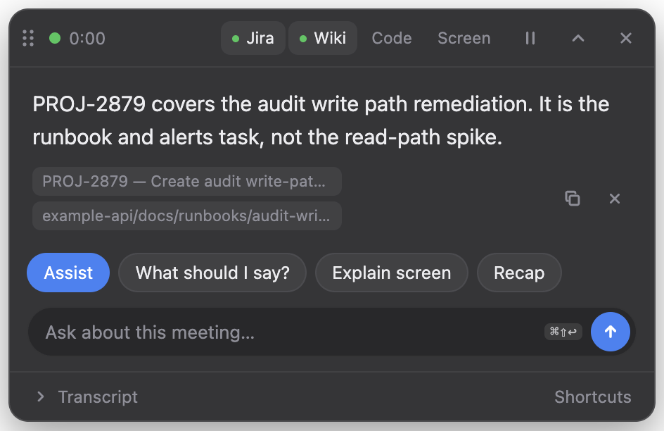

A meeting assistant that stays on your Mac.
Clueless listens to a call, transcribes it on the machine, and answers on a hotkey. The overlay is invisible to screen share. The meeting is not uploaded.

Private
Audio and the transcript stay in memory. They are not written to disk, and prompts go only to a model running on this Mac. The Medical profile turns network indexing off and redacts identifiers on screen. It is HIPAA-aware, not HIPAA-certified. Keeping the data local does not replace telling the other people on the call.
Local
Use Ollama, llama.cpp, LM Studio, a GGUF file, or Apple Intelligence. Every model address has to be on this computer. It works with Teams, Zoom, Webex, FaceTime, and Skype, and it hears both sides. Ask from the last 90 seconds with ⌘⇧\, ask what to say with ⌘⇧A, or ask what was just said with ⌘⇧E.
Open source
Clueless is MIT licensed. The code is public, and anyone can contribute: a bug, a correction, or a pull request. Start with the contributing guide. Report security issues in private.
What's next
Later releases are aimed at performance and stability. Faster answers, fewer rough edges, and the same rule about the meeting: it stays on your Mac.